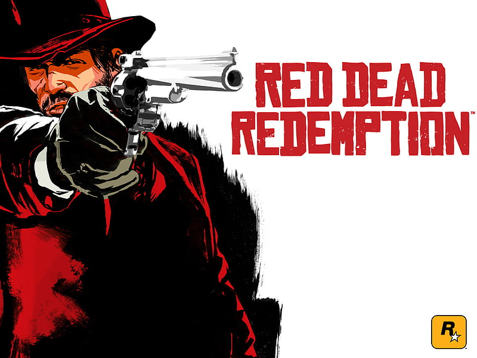

Descripción
MIEMBROS DE XBOX GAME PASS: Descarga y juega seleccionando "Halo: The Master Chief Collection", "Halo 3: ODST" y "Halo: Reach" en "En este paquete".
Mejorada, actualizada y mejor que nunca, la historia completa del Jefe Maestro se optimizó para Xbox Series X|S. Disfruta de funciones de última generación como tiempos de carga más rápidos, juego cruzado, FOV ajustable, experiencia de pantalla dividida y mejorada y una resolución de hasta 4K a 120 fotogramas por segundo.*
En honor al icónico héroe y a su épico viaje, la historia completa del Jefe Maestro se presenta en Halo: The Master Chief Collection. Halo: Combat Evolved Anniversary, Halo 2: Anniversary, Halo 3, Halo 4 y, ahora, Halo: Reach y Halo 3: ODST están incluidos en una experiencia integrada.

red dead
Este juego se en foca en una epoca del biejo oeste serca de nuevo Mexico esta historia nos abla de jhon un forastero que busca pagar una deuda al gobierno por su libertad y la de su familia El salvaje oeste está muriendo. Cuando unos agentes federales
amenazan a su familia, el ex bandido John Marston se ve obligado a
tomar las armas de nuevo y cazar a una banda de criminales a los
que una vez llamó amigos. Disfruta de una experiencia de supervivencia
épica por las desamparadas llanuras del oeste americano y México mientras John Marston
lucha para enterrar su sangriento pasado de hombre en hombre
call
Descripción
La versión de Juegos a petición es compatible con inglés y con los packs de contenido [EN]. Call of Duty®: Black Ops te lleva tras las líneas enemigas, al mundo de las operaciones secretas, como miembro de una unidad de élite de las fuerzas especiales especializada en enfrentamientos encubiertos, operaciones clasificadas y conflictos explosivos en todo el mundo. Con acceso a diverso armamento y equipamiento secreto, tus actos inclinarán la balanza en la época más peligrosa jamás vivida por la humanidad. Black Ops incluye: - Una campaña y una historia épicas que te mantendrán al borde del infarto de principio a fin. - La experiencia multijugador única de Call of Duty, con más niveles de personalización y nuevos modos, como partidas de apuesta, el cine o la instrucción, a los que podrás jugar en individual o en cooperativa. - ¡Zombis! Diviértete durante horas sin fin
gears
Gears of War es una serie de videojuegos y de cómics del género shooter en tercera persona y acción-aventura, desarrollada por Epic Games y The Coalition. Los seis juegos que actualmente integran la serie tienen lugar en el planeta ficticio Sera y se centran en una guerra entre humanos y unas criaturas conocidas como Locust.
Tabla 3x3
Juegos
Exclusibos
info
, Call of Duty
, Grand Theft Auto
, Enfoque en la acción rápida
,Halo Infinite
, Forza Horizon 5
, combates y agilidad
Sea of Thieves
The Outer Worlds
Exploración, resolución de puzzles, historias narrativas.